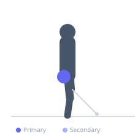
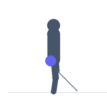

Exercise guide / Standing Cable Hip Abduction
Standing Cable Hip Abduction
A glute medius isolation exercise performed standing, using a cable ankle attachment to provide resistance as the leg is abducted outward to the side. The cable provides consistent resistance throughout the range of motion and allows for progressive overload of the hip abductors.
Primary muscles
gluteus medius
gluteus minimus
Secondary muscles
tensor fasciae latae
gluteus maximus
Stabilizers
transverse abdominis
external oblique
Equipment
Cable Machine (Low Pulley)


Starting position
- Attach an ankle cuff to the low pulley and around the working ankle. Stand sideways to the machine, holding the frame for support.
Setup
- Attach the ankle cuff to the cable low pulley. Stand perpendicular to the machine with the working leg furthest from the pulley.
Steps
- Step 1: Keep the torso upright and stable throughout.
- Step 2: Abduct the working leg outward to the side, keeping the leg relatively straight.
- Step 3: Raise the leg as high as hip mobility allows while keeping the torso stationary.
- Step 4: Return the leg to the starting position in a controlled manner.
Coaching cues
- Torso stays tall
- Lift from the hip, not the waist
Breathing
- Exhale as the leg lifts. Inhale on the return.
Range of motion
- Abduct the leg as high as mobility allows without trunk lateral flexion.
Tempo
- 2-1-2-0
Common mistakes
- Leaning the torso away to assist the leg lift
- Using momentum to swing the leg
Safety
- Keep the torso upright and still — the movement should be isolated to the hip joint
Training
- hypertrophy: 8–15 reps
- endurance: 15–25 reps
- hypertrophy: 3–4 sets
- endurance: 2–3 sets
- Rest: {'hypertrophy': 90, 'endurance': 45}